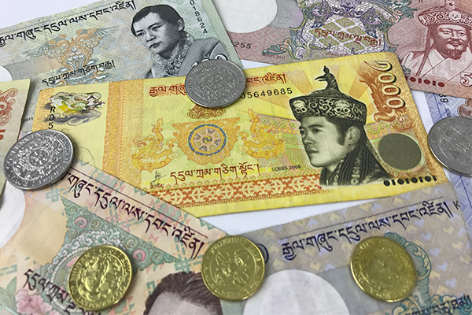

Agriculture

Agriculture is the primary source of income for a significant portion of the population, with most people engaging in subsistence farming. Crops such as rice, barley, and wheat are common. Livestock farming, including animals such as yaks and cows, also contributes to the income and food security.
Hydropower

Bhutan has abundant water resources from the Himalayas, allowing for substantial hydropower generation. The country exports most of this electricity to India, which serves as a crucial source of revenue.
Tourism

Tourism plays an important role in the economy, following the principle of "High Value, Low Volume" tourism. Tourists are required to pay a daily fee to visit the country, helping to control visitor numbers and minimize environmental impact.
Currency of Bhutan
The Bhutanese Ngultrum (Nu) is the official currency of Bhutan and is pegged to the Indian Rupee (INR), which is also accepted in Bhutan. The Royal Monetary Authority of Bhutan manages the currency and develops the country’s economic and financial strategy.